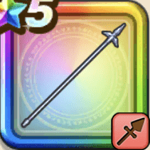

鎧の魔槍
攻略班 7.5点 / あしばらいシャドーステップブラッディースクライド虚空閃グランドクルス光の闘気
くわしい特徴
【レベル別習得スキル】 Lv1【ゴドハン】攻撃力+5 Lv10あしばらい（消費MP：4）敵1体に威力120%の体技ダメージを与えたまに転ばせる Lv20シャドーステップ（消費MP：5）華麗なステップでみかわし率を上げる Lv25ブラッディースクライド（消費MP：28）敵1体に400％のドルマ属性斬撃ダメージを与える Lv28虚空閃（消費MP：30）敵1体にガードやみかわしをされない威力420%のイオ属性斬撃ダメージを与える Lv30グランドクルス（消費MP：1）自分の最大HPを10%消費し、敵全体に威力400%のバギ属性斬撃ダメージを与える Lv35物質系へのダメージ+5% Lv40ドラゴン系へのダメージ+5% Lv45攻撃力+12 Lv50光の闘気（消費MP：12）HP5%以上で致死ダメージ時に1回だけHP1で生き残る(効果6ターン) 【限界突破スキル】 1凸スキルの斬撃・体技ダメージ+7% 2凸スキルの斬撃・体技ダメージ+7% 3凸スキルの斬撃・体技ダメージ+7% 4凸スキルの斬撃・体技ダメージ+7%